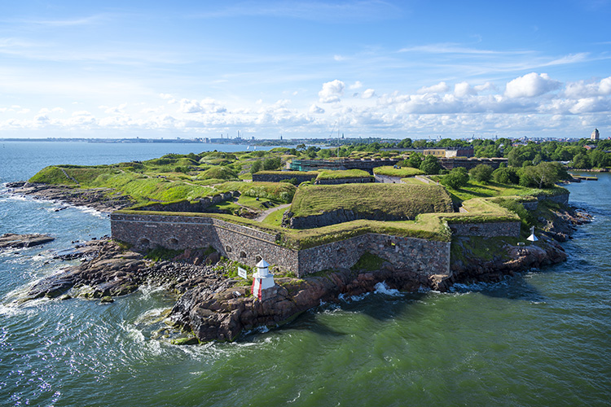
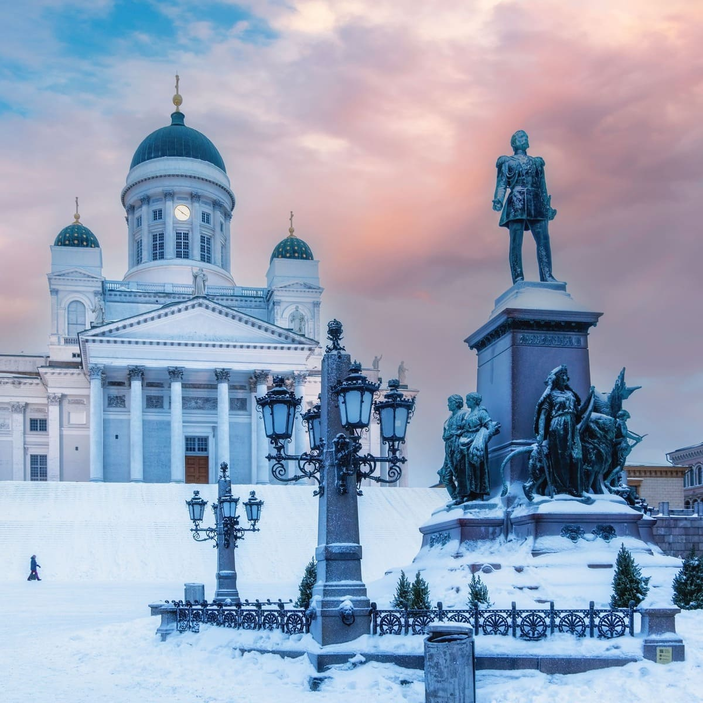
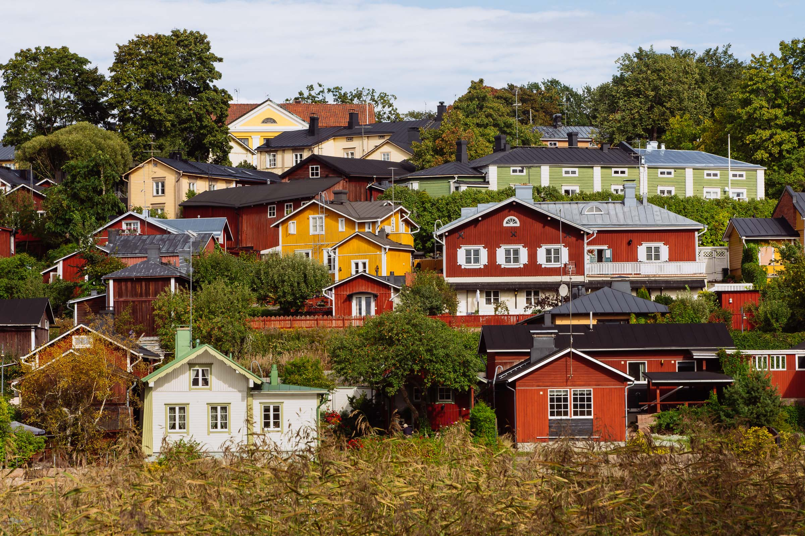
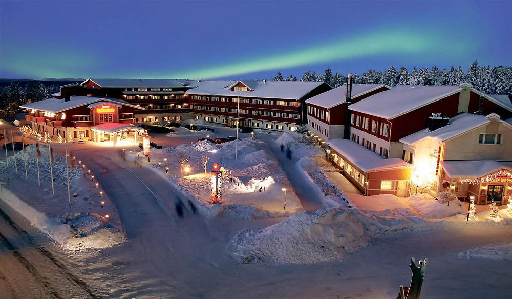
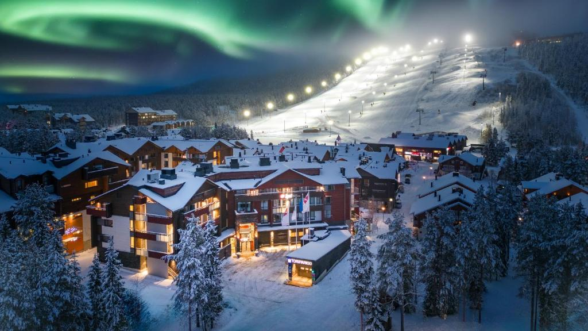
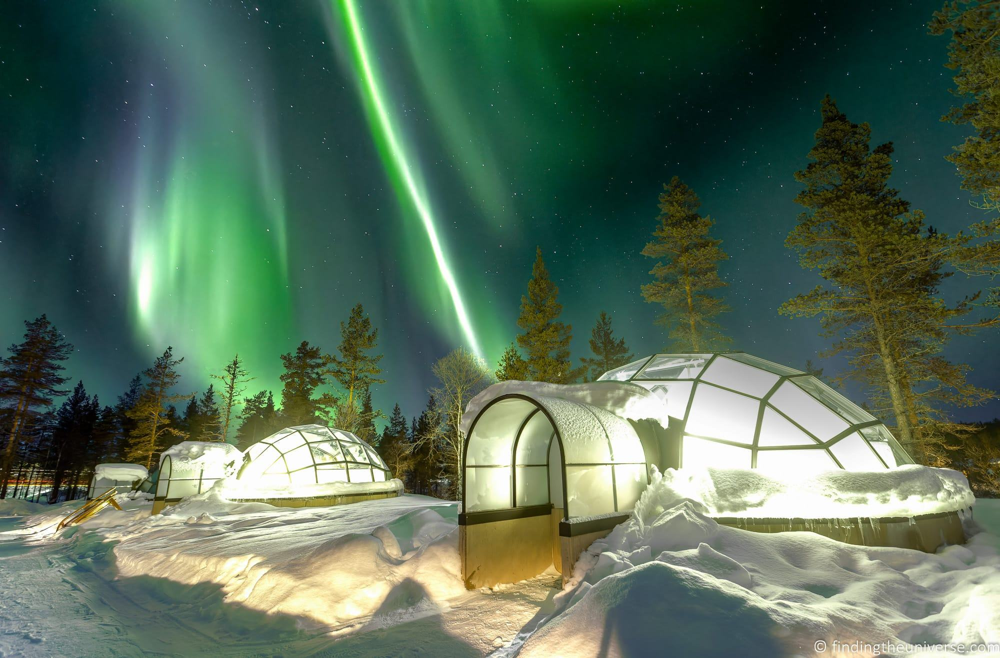
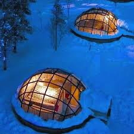

Santa Claus Village (Rovaniemi, Lapland)
Nestled within the magical Arctic Circle, Santa Claus Village is a place where childhood dreams meet the crisp northern air.
Snow-dusted cottages, twinkling lights, and cheerful elves set the stage for festive wonder all year round. Visitors can meet Santa
himself, send postcards from the official Arctic Circle post office, and witness the ethereal dance of the Northern Lights above.
Every corner brims with enchantment, joy, and the warmth of holiday spirit. More than a destination, Santa Claus Village is an
invitation to step into a real-life winter fairytale—where wonder never grows old.
Best time to visit:
Winter evenings (December–February) for snow and northern lights, or daytime in December for the Christmas atmosphere
Opening hours:
Daily, year-round; individual attractions typically 10:00–18:00 (extended hours in peak winter season)
Entry:
Free entry to the village; specific attractions, activities, and Santa meetings may require tickets (€25+)
SEE MAP
Suomenlinna Fortress


Spread across six islands and gently embraced by the Baltic waves, Suomenlinna Fortress is a living testament to centuries of history,
strategy, and resilience. Cobblestone streets, ancient ramparts, and historic cannons whisper tales of sailors, soldiers, and the
city’s maritime past. As you wander through its charming courtyards and scenic paths, the serene sea views and lush greenery create
a peaceful escape from the bustle of Helsinki. Majestic yet intimate, Suomenlinna invites visitors to step back in time and experience
Finland’s heritage in a setting that feels both grand and poetic—a must-see for history lovers and dreamers alike.
Best time to visit:
Late spring to early autumn (May–September)
Opening hours:
Open daily, access by ferry runs year-round (more frequent in summer)
Entry:
Fortress is free to enter, ferry ticket required (included in Helsinki public transport ticket)
SEE MAP
Helsinki Cathedral


Towering gracefully over Senate Square, Helsinki Cathedral is a symbol of elegance, serenity, and Finnish architectural pride. Its
crisp white façade gleams against the sky, while the green domes add a touch of classical charm. Step inside to feel the quiet
reverence of the grand interior, or linger on the steps to watch the city’s heartbeat unfold below. Both a spiritual sanctuary and
a cultural icon, the cathedral invites visitors to pause, admire, and capture the timeless beauty that defines Helsinki. A must-see
landmark where history, design, and poise meet in perfect harmony.
Best time to visit:
Late spring to early autumn, especially on sunny days
Opening hours:
Daily, usually 9:00–18:00 (shorter hours in winter)
Entry:
Free entry, small fee may apply for concerts or special events
SEE MAP
Porvoo Old Town


Step into a living postcard in Porvoo Old Town, where cobblestone streets wind past pastel-colored wooden houses and centuries-old
churches. The air carries whispers of history, artisan shops, and cozy cafés where locals and travelers mingle over coffee and
pastries. Meander along the serene riverbanks, watch the sunlight dance on red warehouses, and feel the charm of a town that time
seems to have tenderly preserved. Porvoo is not just a destination—it’s a storybook village inviting you to stroll, dream, and savor
the poetic rhythm of Finnish heritage.
Best time to visit:
Late spring to early autumn, daytime for strolls, sunset for photos
Opening hours:
Open daily, accessible at all times
Entry:
Free entry
SEE MAP
Levi Ski Resort (Lapland)


Nestled in the heart of Lapland’s snowy wilderness, Levi Ski Resort is a winter wonderland where adventure meets serene beauty.
Powdered slopes, glistening pine forests, and crisp Arctic air create the perfect playground for skiing, snowboarding, and snowshoeing.
As the northern lights dance across the sky, the resort transforms into a magical retreat, blending thrilling outdoor activity with
cozy lodges and warm Finnish hospitality. Whether chasing adrenaline or soaking in the tranquil Arctic charm, Levi offers an
unforgettable experience at the very edge of the world.
Best time to visit:
December to April for skiing, February to March for longer daylight
Opening hours:
Ski season daily, lift hours vary by season
Entry:
Resort access is free, ski passes and activities require a ticket (€40+ per day)
SEE MAP
Kakslauttanen Arctic Resort


Imagine a place where the Arctic sky meets glass igloos and snowy forests, and you’ll find Kakslauttanen Arctic Resort. Here, visitors
can sleep beneath the shimmering northern lights, sip hot drinks by cozy fires, and wake to pristine snow-covered landscapes.
Traditional log cabins and innovative glass igloos blend comfort with adventure, creating a magical retreat in the heart of Lapland.
Whether you’re chasing the aurora borealis, exploring husky trails, or simply embracing the serene Arctic beauty, Kakslauttanen offers
an unforgettable experience that feels both otherworldly and warmly inviting.
Best time to visit:
December to March for Northern Lights, June to August for Midnight Sun
Opening hours:
Open year-round
Entry:
Accommodation and activities paid separately (€200+ per night for glass igloos, activities vary)
SEE MAP